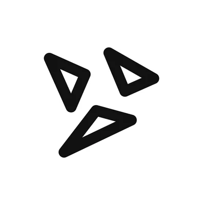
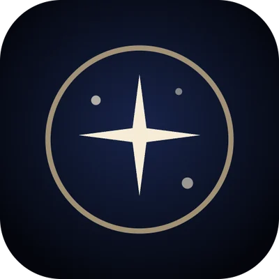
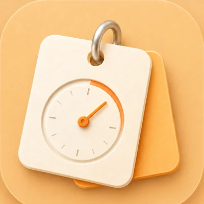
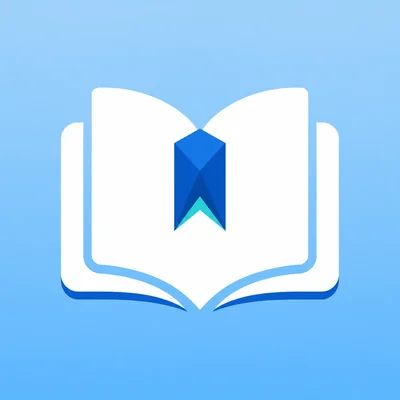
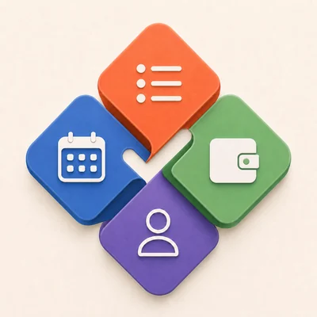

Freelance iOS & full-stack developer — open to new projects自由职业 iOS 与全栈开发 · 正在接新项目
Whole apps,完整的 App，





from first sketch从第一张草图
to the App Store.做到 App Store。
I design, build and ship complete products: native iPhone, iPad and Mac apps, the backend behind them, and interactive web. Two of my apps are on the App Store, and a client app I built passed review and is live. 我一个人把产品完整做出来：原生 iPhone、iPad 和 Mac App，背后的服务器，还有可交互的网页。两个自己的 App 已经上架 App Store，做的一个客户 App 也已过审上线。
- 06
- products of my own个自己的产品
- 02
- live on the App Store个已上架 App Store
- 01
- client app shipped个客户 App 已上线
- 04
- platforms: iPhone, iPad, Mac, web个平台：iPhone、iPad、Mac、网页
Selected work作品2026
01iPhone, iPad & Mac · TestFlight beta · 2026iPhone、iPad、Mac · TestFlight 测试中 · 2026
Noitek
An AI study workspace for university students, on iPhone, iPad and Mac.给大学生的 AI 学习工作台，iPhone、iPad、Mac 都能用。
- 3
- platforms from one SwiftUI codebase个平台，同一套 SwiftUI 代码
- 2
- AI providers, OpenAI and Anthropic, routed by my backend家模型服务（OpenAI 和 Anthropic），由我写的后端调度
- 0
- changes saved before the student approves未经学生确认就保存的改动
Its assistant, Noity, streams its replies and calls tools to read the student’s courses, schedule, notes and sources, then proposes events, notes and quizzes as cards to confirm. I also built the backend: FastAPI and PostgreSQL behind nginx, with accounts, usage metering, push notifications and library sync.里面的助手 Noity 边想边说，会调用工具读取学生的课程、日程、笔记和资料，再把要新建的日程、笔记和测验做成卡片请学生确认。后端也是我写的：FastAPI + PostgreSQL，跑在 nginx 后面，负责账号、用量计量、推送和资料同步。
Swift · SwiftUI · WidgetKit · FastAPI · PostgreSQL · nginx
02Web app · Live · 2026网页应用 · 已上线 · 2026
The Night You Arrived你来的那晚The Night You Arrived
Enter a birthday and a city, and see the real sky above it at that moment — computed in the browser, drawn in WebGL.输入生日和出生城市，看那一刻那座城市头顶的真实星空：在浏览器里实时计算，用 WebGL 画出来。
- mag 8
- faintest stars drawn, from the HYG catalogue最暗画到 8 等星，来自 HYG 星表
- 4
- poster styles, exported at 1440 × 1920种海报风格，导出 1440 × 1920
- 100%
- computed in your browser: stars, moon, planets在浏览器里算：恒星、月相、行星
Star trails that rewind, a look-up view that follows the phone’s gyroscope, music generated from the sky, and two people’s skies side by side.会倒转的星轨、跟着手机陀螺仪抬头看的第一人称视角、由星空生成的音乐，还能把两个人的星空并排比较。
JavaScript · WebGL · Web Audio · Astronomy Engine · GitHub Actions
Open the live site打开网站 ↗03iPhone & iPad · TestFlight · August 2026iPhone 与 iPad · TestFlight · 2026 年 8 月
Couples companionPrivate app · name withheld情侣 App私人 App · 不公开名称
A private app for two: partners send each other flowers and letters, set reminders for each other, and keep a shared photo album — each on their own device.两个人专用的 App：互相送花、写信、给对方设提醒，一起存相册，各用各的设备。
- 2
- apps from one SwiftUI codebase: iPhone and iPad个 App 出自同一套 SwiftUI 代码：iPhone 和 iPad
- 0
- servers of my own — sync runs on CloudKit shared zones台自建服务器，同步走 CloudKit 私有共享区
- 52k
- lines of Swift行 Swift 代码
I led feature design and art direction: pastel gradients, floral illustration and airy iPad layouts. Reminders can be set from a plain sentence.功能设计和美术方向由我主导：粉彩渐变、花束插画、宽松的 iPad 排版。提醒可以直接用一句话来设。
Swift · SwiftUI · CloudKit · TestFlight
04iOS · App Store · June 2026iOS · App Store · 2026 年 6 月
MemoClock
A study app for science students: formulas, handwritten notes, mistakes and concepts, brought back on a review schedule.给理科生的学习 App：公式、手写笔记、错题和概念，按复习节奏回到你面前。
- No.17
- peak rank, China Paid Education chart中国区付费教育榜最高排名
- 300+
- downloads and sign-ups by mid-June6 月中旬的下载和注册
- 2 wks2 周
- from first idea to App Store launch从想法到上架
I also ran its social account: 12 organic posts brought 515+ likes and saves and 20 beta-test requests, and the comments shaped the next features.它的社交账号也是我运营的：12 篇笔记带来 515+ 点赞收藏和 20 个内测申请，评论直接决定了接下来做什么。
Swift · SwiftUI · PencilKit · CloudKit · WidgetKit
05iOS · App Store · October 2026iOS · App Store · 2026 年 10 月
Academic Bluebook
An academic English vocabulary app that takes a learner from word, to example, to review — in one flow.学术英语词汇 App：从单词到例句再到复习，一条线走完。
- 2,100
- academic word senses个学术词义
- 1,500
- with detailed pages and example sentences个词义有详解页和例句
- FSRS
- spaced-repetition review and quizzes间隔重复复习和测验
Swift 6 · SwiftUI · SwiftData
06iPhone & iPad · 2026 · not released yetiPhone 与 iPad · 2026 · 尚未上架
Manager
Schedule, class timetable and personal finances in one app, built on one data model.日程、课表和个人财务放进同一个 App，用同一套数据模型。
- 3
- areas in one data model: time, classes, money块内容共用一套数据：时间、课程、钱
- 2
- languages, English and Chinese种语言：英文和中文
- 50k
- lines of Swift行 Swift 代码
Accounts, recurring income and expenses, savings goals, plan comparison, exchange-rate trends and reminders.账户、周期性收支、储蓄目标、方案对比、汇率走势和提醒。
Swift · SwiftUI
07Client work · iOS · App Store · 2026客户项目 · iOS · App Store · 2026
An exam-recall appConfidential client · name withheld考试回忆练习 App保密客户 · 不公开名称
Students answer by voice or by typing, get feedback, and review dense subject content on a spaced-repetition schedule. It passed App Store review and is live.学生用语音或打字作答，得到反馈，再按间隔重复复习大量考点。已通过 App Store 审核上线。
- 68k
- lines of Flutter (Dart)行 Flutter（Dart）代码
- 3
- parts: app, API and admin console个部分：App、接口服务、管理后台
- Live上线
- passed App Store review已通过 App Store 审核
I turned the client’s requirements into the product, led UX and UI, and built it: the Flutter app, plus a TypeScript backend with an admin console, Sign in with Apple and in-app purchase verification, deployed with Docker on Tencent Cloud.我把客户的需求变成产品，主导交互和界面，并把它做出来：Flutter 写的 App，加上 TypeScript 后端，带管理后台、Apple 登录和内购校验，用 Docker 部署在腾讯云。
Flutter · Dart · TypeScript · Fastify · Prisma · PostgreSQL · Docker
One person,
every layer.一个人，
从界面做到服务器。
AppsApp
Swift and SwiftUI for iPhone, iPad and Mac — SwiftData, CloudKit, PencilKit, widgets, push notifications, Sign in with Apple, through to TestFlight and the App Store. Flutter when it has to run everywhere.用 Swift 和 SwiftUI 做 iPhone、iPad、Mac：SwiftData、CloudKit、PencilKit、小组件、推送、Apple 登录，一直做到 TestFlight 和上架。要跨平台时用 Flutter。
Backend & AI后端与 AI
Python with FastAPI or TypeScript with Fastify, on PostgreSQL, deployed with Docker and nginx. AI assistants that call tools, on the OpenAI and Anthropic APIs.Python + FastAPI 或 TypeScript + Fastify，数据库用 PostgreSQL，用 Docker 和 nginx 部署。会调用工具的 AI 助手，接 OpenAI 和 Anthropic 的接口。
Web & design网页与设计
WebGL, Canvas and Web Audio for the web. UI, app icons and App Store screenshots in Figma, so a first version doesn’t need a separate designer.网页用 WebGL、Canvas 和 Web Audio。界面、App 图标和商店截图在 Figma 里做，第一版不用另外找设计师。
I ship in small steps you can try, with clear written updates along the way.我会一小步一小步交付，每一步你都能上手试，过程中写清楚的进度说明。
Contact联系
Have an app
in mind?有想做的
App 吗？
wojiaozyh123@gmail.com
Send me a short description of what you want to build. I’ll reply with how I’d approach it and a realistic timeline.发我一段简短的描述，说说你想做什么。我会回复我打算怎么做，以及实际需要多久。